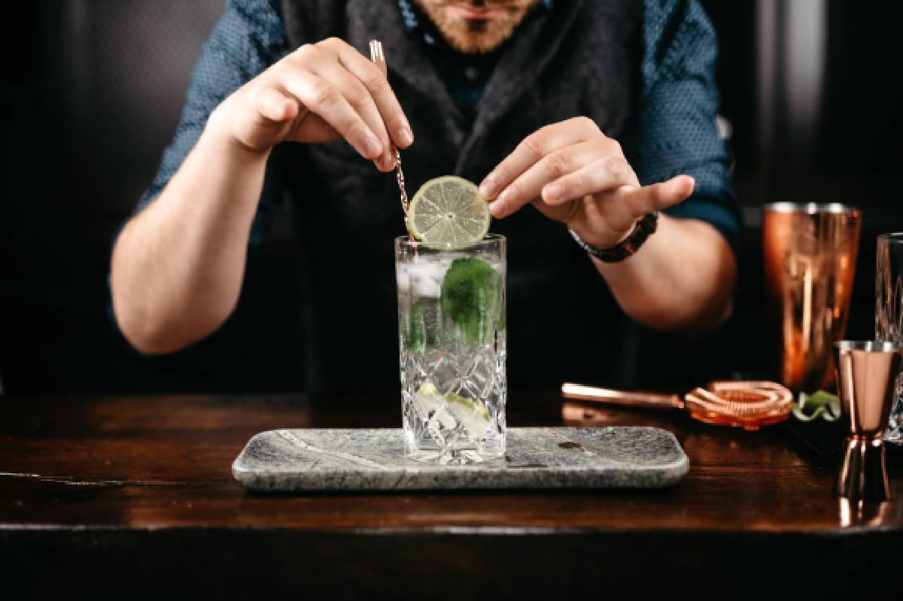
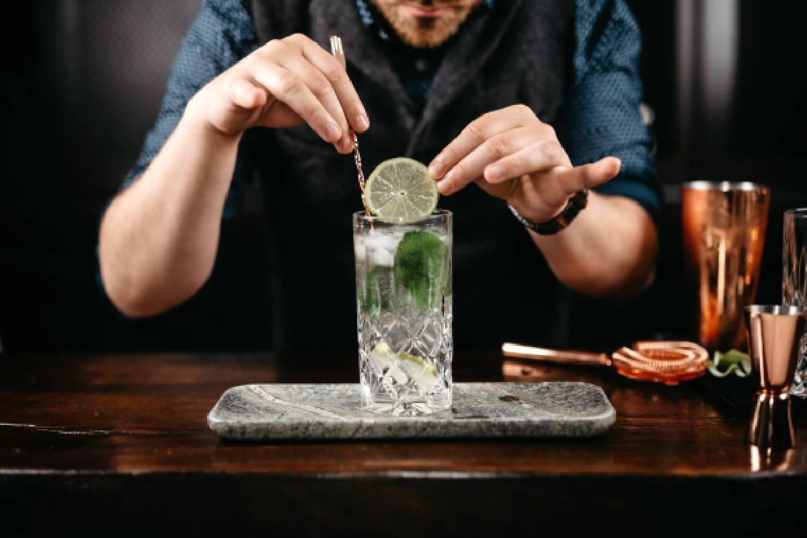

ESSENTIAL GiN
En la selección de nuestros botánicos,
buscamos insumos de excelente
calidad, y de productores locales.
Enebro, Cardamomo, Coriandro, Flor de Azahar, Cedrón, Piel de Pomelo,
Piel
de Limón y Clavo de Olor son algunos de los botánicos y cítricos
que utilizamos en la
maceración.
El enebro salvaje de la patagonia le da un perfil especial y
lo diferencia
de la mayoría de los gin que se conocen.

La Historia
Según se sabe, el nacimiento de la ginebra se dio cuando un profesor
de
medicina holandés, de apellido Sylvius, maceró bayas de enebro en
alcohol con fines
diuréticos, a mediados del siglo XVI.
Se utilizó con esos fines hasta que un tal Lucas Bols (oh!)
tuvo la genial
idea de destilar esos macerados y embotellar ,
el producto bajo el nombre de ginebra.
Este suceso ocurrió en 1575, siendo que la ginebra como bebida
y Bols como
marca, aparecieron juntas y hace tanto tiempo!
Resulta que este delicioso brebaje muchos años después tuvo
su mayor éxito en
Gran Bretaña, con lo cual el gobierno
aprovechó para gravar la importación de ginebra
con impuestos más duros y a los ingleses no les quedó
otra que destilarla por sus
propios medios
Premios
Mejor Ginebra del Año
Mejor Sabor del Año
Mejor Botella del Año
Elaborado manualmente en cada etapa de su proceso
 

Buscamos que, desde la selección de sus insumos hasta el embotellado del producto finalizado,
todo el proceso sea cuidadosamente supervisado.